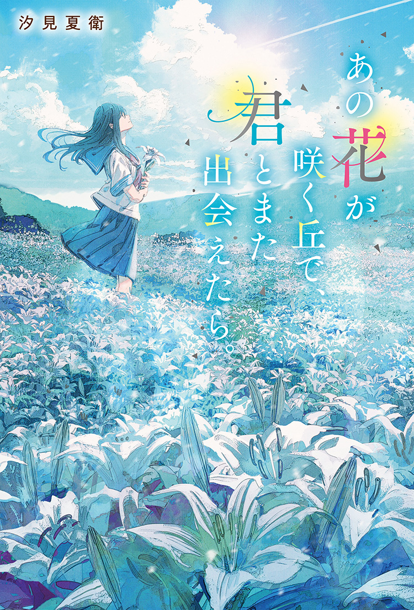

あらすじ
親や学校、すべてにイライラして不満ばかりの高校生の百合（福原遥）。
ある日、進路をめぐって母親の幸恵（中嶋朋子）とぶつかり家出をし、近所の防空壕跡に逃げ込むが、
朝目が覚めるとそこは1945年の6月…戦時中の日本だった。
偶然通りかかった彰（水上恒司）に助けられ、軍の指定食堂に連れていかれる百合。
そこで女将のツル（松坂慶子）や勤労学生の千代（出口夏希）、石丸（伊藤健太郎）、
板倉（嶋﨑斗亜）、寺岡（上川周作）、加藤（小野塚勇人）たちと出会い、
日々を過ごす中で、彰に何度も助けられ、その誠実さや優しさにどんどん惹かれていく百合。
だが彰は特攻隊員で、程なく命がけで戦地に飛ぶ運命だった−−− 。
主題歌
福原さん水上さんたち二十代の俳優をはじめとする出演者全員が表現する1945年の夏。あの日々に想いを馳せた誠実なお芝居に胸を打たれました。本作は、運命がもたらす喜びと苦しみを教えてくれています。時代という抗えない濁流の中に飲み込まれる一滴の水のように出会った百合と彰の運命。人々の日常を破壊する戦争という行為が、何度も繰り返されてきた時代の果てである現在。その2023年に産み落とされた今作に寄せて「いま、日々を生きていることの幸せ」を歌で描きたいと思いました。毎日帰るべき場所へ帰れることの幸せを。世代や時代を超えて、この映画が多くの人に触れてもらえることを願います。
原作

汐見夏衛 原作
鹿児島県出身。愛知県在住。
高校の国語教師として働きながら、小説サイト「野いちご」で趣味として小説の執筆をスタートした。
2016年に『あの花が咲く丘で、君とまた出会えたら。』（スターツ出版）で書籍化デビュー。
2023年に著書『夜が明けたら、いちばんに君に会いにいく』（スターツ出版）が映画化。
映像化作品は本作が2作目となる。
その他の主な著作に『まだ見ぬ春も、君のとなりで笑っていたい』（スターツ出版）、
『たとえ祈りが届かなくても君に伝えたいことがあるんだ』（KADOKAWA）、『さよならごはんを今夜も君と』（幻冬舎）などがある。
コメント